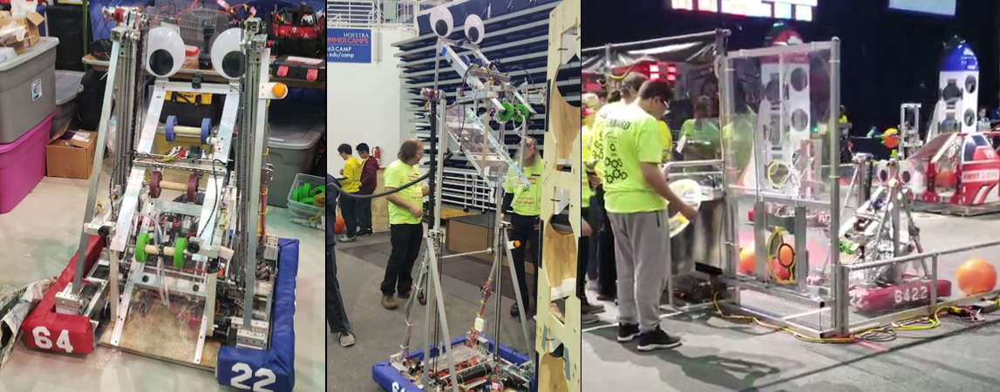

"Pterry" - FRC 2019

2019 Game and Pterry's Design
The game this year involved placing orange kick-balls into shuttles, then covering the shuttle opening with a hatch disk. The shuttle openings were at various heights, up to ~6ft off the ground.
Pterry accomplished this task by utilizing a two-stage chain driven elevator that carried 'the box', which would pick up balls from the ground in front to shoot them out the back, as well as hydraulic extending suction cups for picking up the disks. The robot utilized Mecanum wheels for maneuverability when aiming the cargo into the goals.

The Box
All of the robot's interaction with the game field is done with the box. It had several chain driven wheels for intake, storage and ejection of the kick-balls, and a pair of hydraulically actuated suction cup arms for manipulating the acrylic hatch panels. The main intake wheel was made of surgical tubing 'tentacles' that would suck in the ball from a wide range in front of the robot. The entire box was lifted from the ground up to ~6-7ft to reach the top cargo goals.